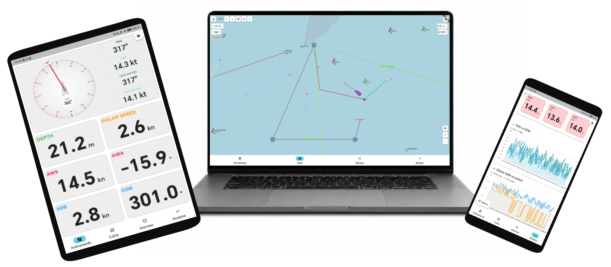

Kornog centralise les données du bord, les alarmes, la météo, le routage et l'analyse dans une interface claire, pensée pour une utilisation embarquée sur smartphone, tablette ou ordinateur.
Entre les instruments, les écrans dédiés, les applications météo et les outils d'analyse, les données de navigation sont souvent fragmentées. Kornog vise à les rendre plus lisibles et plus utiles dans une interface unique.
Chaque instrument affiche ses propres données, sans vue d'ensemble cohérente.
La navigation entre plusieurs écrans augmente la charge cognitive à bord.
Certaines informations importantes sont peu lisibles pendant la navigation active.
Après la navigation, il manque souvent un historique précis pour analyser et progresser.
Les traceurs et afficheurs dédiés représentent un investissement important, souvent inaccessible pour les plaisanciers ou les voiliers de club.
Kornog reçoit les données disponibles du réseau NMEA du bord (0183 ou 2000) via Wi-Fi depuis des passerelles ou instruments compatibles et les affiche dans une interface pensée pour l'usage embarqué.
L'objectif est de rassembler toutes les informations utiles à un seul endroit — pour naviguer avec plus de clarté et moins de dispersion.
Tester l'applicationSélectionnez une capture pour découvrir la fonctionnalité en détail.

Créez vos routes de navigation, posez des waypoints et suivez votre progression cap après cap sur la carte.
Les fonctionnalités disponibles peuvent dépendre du matériel installé à bord, du type de passerelle utilisée et des données effectivement reçues par l'application.
Kornog est en développement actif. Les versions disponibles permettent de tester les premières fonctionnalités et de contribuer aux retours terrain.
Kornog est en développement actif. Les fonctionnalités et la stabilité s'améliorent progressivement.
Kornog s'adresse à toutes celles et ceux qui souhaitent mieux exploiter les données disponibles à bord de leur voilier.
Pour suivre clairement les données disponibles à bord et mieux exploiter les instruments déjà installés.
Pour accéder facilement aux informations utiles pendant la navigation, depuis son propre téléphone.
Pour gérer le compte à rebours, surveiller les conditions de vent et analyser les tendances rencontrées.
Pour renforcer la lisibilité des informations, gérer les alarmes et conserver un suivi précis des sorties.
Pour tester une solution accessible et évolutive autour de la donnée embarquée, à moindre coût d'installation.
Kornog est conçu comme un outil d'affichage, d'aide à la décision et d'analyse. Il ne remplace pas les instruments de navigation obligatoires, les cartes réglementaires, les règles de sécurité maritime ni le jugement du skipper.
Le logiciel est en constante évolution. Chaque retour terrain compte : suggestions de fonctionnalités, bugs constatés, difficultés d'utilisation, compatibilité matérielle, cas d'usage particuliers… Votre expérience réelle à bord est la meilleure boussole pour orienter le développement.
Vous êtes plaisancier, régatier, équipier, club ou école de voile ? N'hésitez pas à prendre contact.